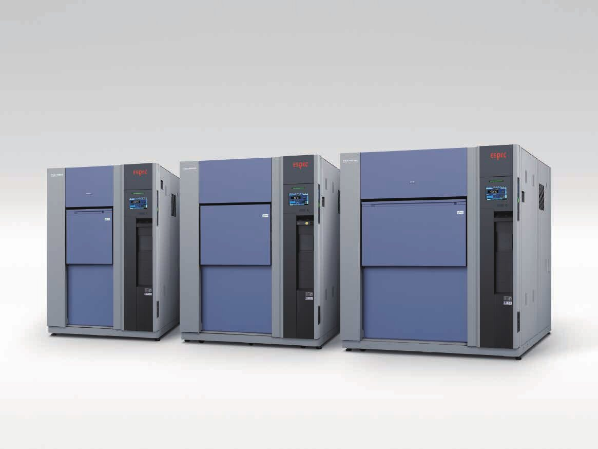

반도체
HAST 시험기와 절연·저항 평가 시스템으로 패키지 수명을 확인합니다.
ESPEC 한국 공식 총대리점|SINCE 1981
항온(항습)기
온도 범위 (모델별)-70 ~ +100°C
온도와 습도를 함께 걸어 신뢰성을 확인하는 ESPEC 대표 시리즈입니다. 2025 굿디자인상(ECO형).


시험 대상에 맞는 장비와 평가 시스템을 안내합니다.
HAST 시험기와 절연·저항 평가 시스템으로 패키지 수명을 확인합니다.

항온항습기와 열충격 시험기로 온도·습도 변화에 대한 내구성을 봅니다.

충방전 평가부터 온도 환경의 안전 시험까지 한 곳에서 상담합니다.

사람이 들어가는 워크인 챔버로 차량과 대형 장비를 시험합니다.
1981년 ESPEC 한국 총판 대리점 계약으로 시작했습니다.
1981년 설립 후 2026년 창립 45주년
충남 아산 공장 준공
매년 ESPEC 연구진 국내 세미나
본사·서울사무소·대구지사·광주지사